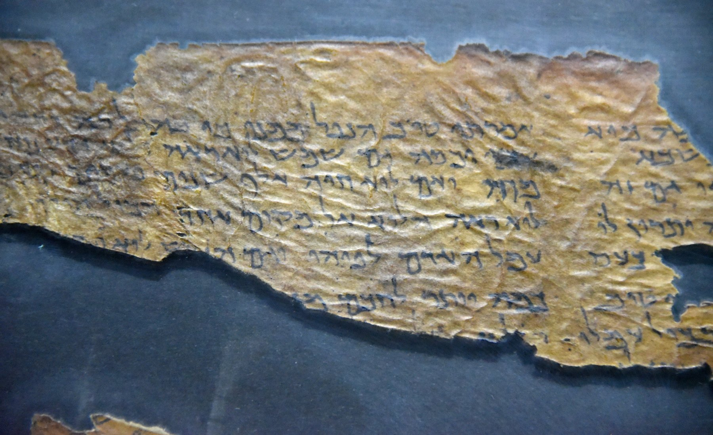

Ecclesiastes Scroll (4QQoha)

- Category
- Biblical
- Cave
- Qumran Cave 4
- Completeness
- Fragment
- Date Approx
- c. 175-150 BC
- Description
- Fragments of a Hebrew copy of Ecclesiastes (Qohelet) from Qumran Cave 4, among the oldest Dead Sea Scrolls found at Qumran. The surviving text covers parts of chapters 5-7, including the well-known saying that sorrow is better than laughter (Ecclesiastes 7). It is the larger of the two Qumran Ecclesiastes copies: the published count gives it about 125 words against about 21 for 4Q110 (4QQohb, Ecclesiastes 1:10-15).
- Language
- Hebrew
- Location
- Qumran, Judaean Desert
- Manuscript
- Ecclesiastes Scroll (4QQoha)
- Manuscript ID
- 4Q109 (4QQoha)
- Period
- Hellenistic
- Preserved Passages
- Related Books
- Script
- Square Hebrew
- Significance
- Pushes the Hebrew text of Ecclesiastes back to the mid-2nd century BC, centuries before the medieval manuscripts, and shows the book already in circulation in essentially its familiar form. Its variants against the Masoretic Text are minor in character; its importance is its age and its confirmation of the book's early transmission, not a rival text of Ecclesiastes.
- Work
- Ecclesiastes
Scholarly Debate Scholars disagree about a key claim in this entry. The entry text states the disagreement; read it as contested, not settled. About verification
Sources: https://dornsife.usc.edu/wsrp/qohelet-ecclesiastes/
https://en.wikipedia.org/wiki/List_of_manuscripts_from_Qumran_Cave_4
https://en.wikipedia.org/wiki/List_of_manuscripts_from_Qumran_Cave_4
Last reviewed: 2026-10-27